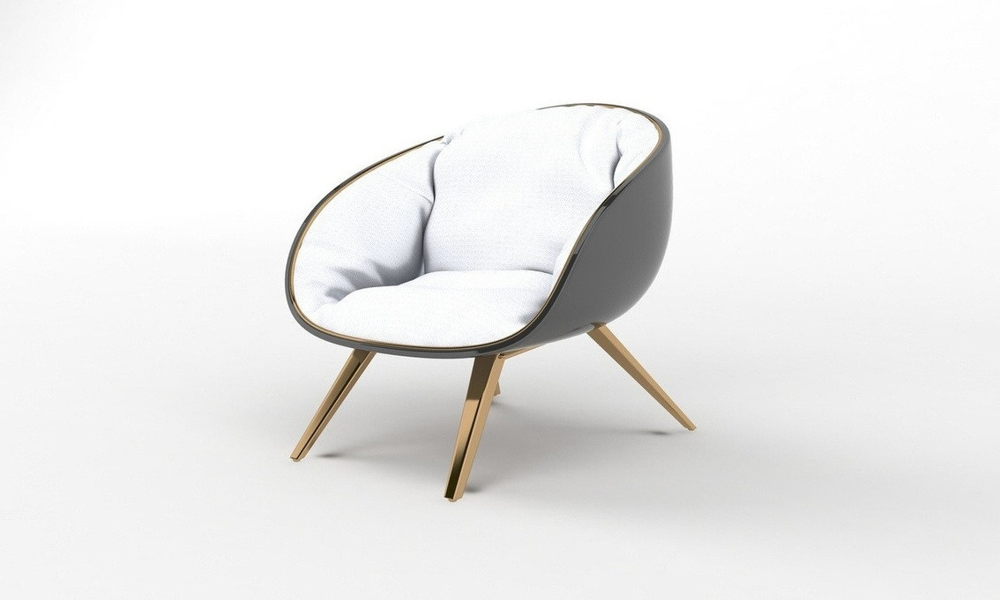
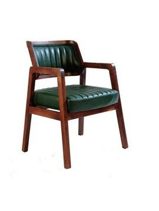
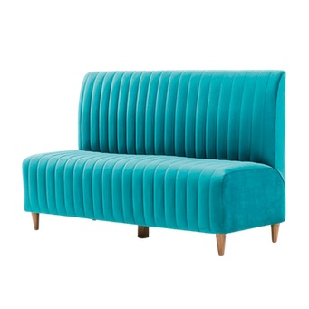

Ürün Kataloğu
2026
2026

Mersan Mutfak, profesyonel mutfaklara ve yeme içme işletmelerine yönelik ürünler sunar. Bu katalogda restoran, kafe ve oteller için sandalye, sedir ve masa seçeneklerini bir araya getirdik.

